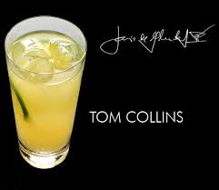

Tom Collins
El nombre proviene de un chiste o anécdota que ganó popularidad en Estados Unidos durante la década de 1870:6 dos amigos conversan y uno advierte al otro que cierto "Tom Collins" está esparciendo calumnias sobre él. Ante la afrenta, el afectado sale furioso del lugar buscando a Collins, sin percatarse de que jamás existió. La historia se volvió tan popular en Nueva York y Filadelfia que fue bautizada «La gran farsa de Tom Collins de 1874» (The Great Tom Collins Hoax of 1874), con periódicos publicando supuestos avistamientos y canciones dedicadas al personaje ficticio. Aprovechando tal fama, un barman dio el mismo nombre al trago, para que todo aquel que ingresara al bar preguntando por Tom Collins estuviese involuntariamente pidiendo la bebida.